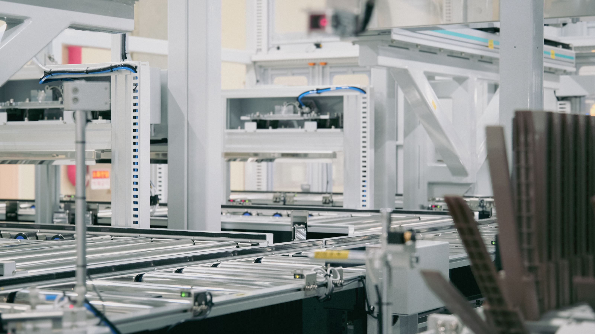
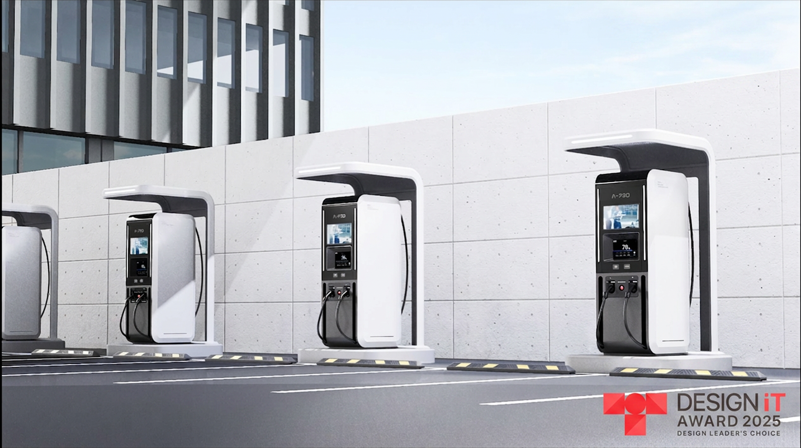
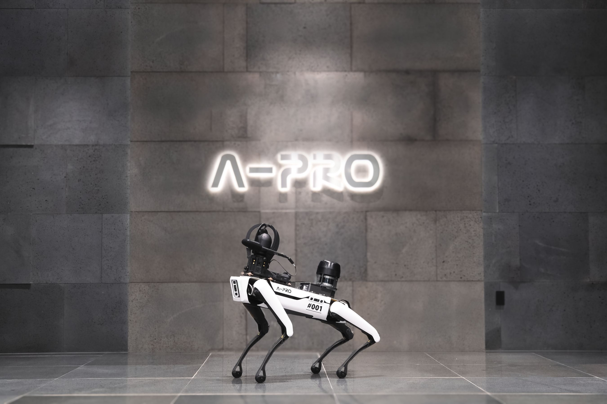
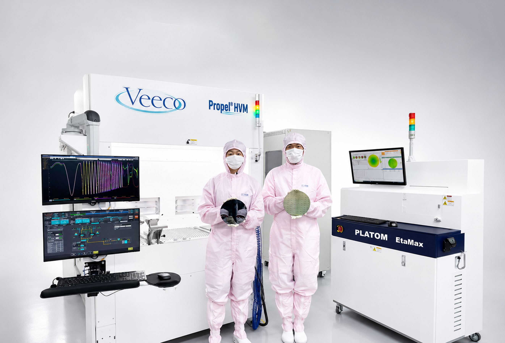

ABOUT A-PRO
미래에너지를 만드는 에이프로 A-PRO
공정 장비의 통합 설계 능력을 바탕으로 지속 성장 기반 구축
A-PRO는 이차전지 제조 공정의 핵심 장비를 글로벌 시장에 공급하는 에너지 솔루션 전문기업입니다.
독자적인 전력변환 및 정밀 제어 기술을 기반으로 전기자동차와 e-Mobility 등 다양한 배터리 응용 분야에 최적화된 통합 솔루션을 제공합니다.
A-PRO는 고효율 전력변환 기술, 사용자 중심의 설계 역량, 축적된 생산 노하우와 체계적인 사후관리 시스템을 바탕으로 고객의 생산성과 품질 경쟁력을 높이고 있습니다. 앞으로도 첨단 전력변환·제어계측 기술을 지속적으로 고도화하여, 글로벌 친환경 에너지 산업의 성장을 선도하는 기업으로 도약하겠습니다.
코스닥 상장
2020.07.16
업력
26년
2000.06.27 설립
대표이사
임종현
임직원
270명
자본금
72.3억 원
매출액
1,416.2억 원
2025년
3년 평균 매출액
1,944.3억 원
수출 비중
80% 이상
VISION 2030
Global Top 5
에이프로 그룹은 2030년까지 종합 에너지 솔루션 분야에서 글로벌 Top5에 진입하는 것을 미래 목표로 삼고 있습니다.
단순한 부품·장비 공급을 넘어, 에너지 전 영역을 아우르는 통합 솔루션 기업으로 도약하겠다는 의지를 담고 있습니다.
Total Energy - Solution Provider

스마트 제조

에너지 인프라

인공지능 플랫폼

화합물 전력 반도체
VISION 2030을 실현하는
AAA
Strategy
앞선 기술력과 축적된 노하우로 시장을 선도합니다.
도전적이고 과감한 자세로 시장을 확대합니다.
빠르게 변화하는 에너지 환경에 유연하게 대응합니다.
에이프로는 구성원이 자부심을 갖고 성장할 수 있는 ‘일하기 좋은 일터’를 기반으로 6대 가치와 AAA 전략을 실천하여 글로벌 종합 에너지 솔루션 기업으로 나아갑니다.